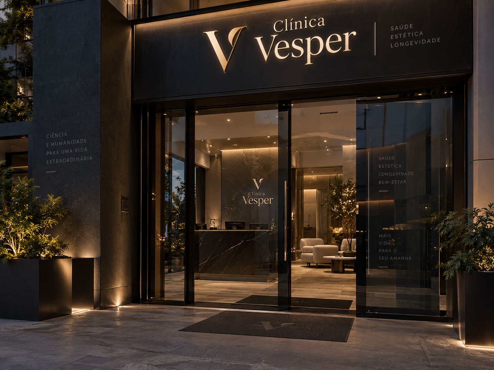

Movimento
Fisioterapia
Avaliação funcional e acompanhamento voltados à mobilidade, à reabilitação e à autonomia nas atividades do dia a dia.
- Avaliação do movimento e da função
- Reabilitação musculoesquelética
- Orientação de exercícios terapêuticos
Ciência. Escuta. Equilíbrio.
Movimento, alimentação e saúde mental fazem parte da mesma história: a sua. Na Clínica Vesper, o cuidado começa pela escuta e considera cada dimensão da sua vida.

01 / A Vesper
Cada pessoa traz uma combinação única de corpo, rotina, emoções e objetivos. É a partir dessa singularidade que pensamos o cuidado.
A proposta da Clínica Vesper reúne fisioterapia, nutrição e saúde mental, com a clínica geral como apoio à visão integrada da saúde. Especialidades que dialogam, respeitando as necessidades e os limites de cada atendimento.
Um espaço pensado para acolher com discrição, comunicar com clareza e construir caminhos de cuidado junto com você.
02 / Especialidades
Conheça as áreas que compõem a proposta de atendimento da Vesper.
Movimento
Avaliação funcional e acompanhamento voltados à mobilidade, à reabilitação e à autonomia nas atividades do dia a dia.
Nutrição
Orientação alimentar que considera sua rotina, preferências e necessidades, com planejamento individualizado e objetivos construídos em conjunto.
Mente
Atendimento em psiquiatria com escuta cuidadosa e avaliação individual, considerando o contexto de vida e as necessidades de cada pessoa.
Integração
Um olhar amplo sobre a saúde para avaliar necessidades, orientar medidas preventivas e apoiar a integração entre os diferentes atendimentos.
03 / Pessoas que cuidam
Conheça os profissionais fictícios que representam a proposta de cuidado integrado da Clínica Vesper.
Clínica Geral
Responsável pela avaliação clínica e pelo apoio à integração do cuidado, com atenção à prevenção e às necessidades individuais.
Fisioterapeuta
Atua no acompanhamento do movimento, da mobilidade e da reabilitação, considerando a funcionalidade e os objetivos de cada pessoa.
Psiquiatra
Responsável pelo atendimento em psiquiatria, com escuta atenta, avaliação individual e acompanhamento das necessidades de saúde mental.
04 / Nosso cuidado
Nossa proposta de atendimento parte da escuta e avança com clareza, respeitando o seu contexto.
Conhecer sua história, sua rotina e o que motivou a busca por atendimento.
Definir as orientações e os próximos passos a partir da avaliação profissional e das suas necessidades.
Rever o plano de cuidado conforme a evolução e integrar outras especialidades quando necessário.
05 / Primeiro contato
O cuidado começa com uma aproximação. Este formulário apresenta como seria o primeiro contato com a Vesper.
Demonstração acadêmica: esta clínica é fictícia. O formulário não envia nem armazena dados e não realiza agendamentos. Utilize apenas informações fictícias.